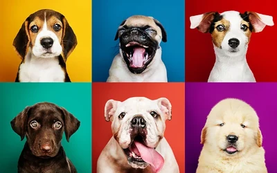

Nossos Projetos em Ação

Cada iniciativa da Amor de Pata é um passo a mais para garantir um mundo melhor para os animais.
Conheça nossos principais projetos e descubra como você pode participar e fazer a diferença! 💚
🐾 Resgata Pata
Programa contínuo de resgate e acolhimento de animais abandonados nas ruas.
Realizamos transporte seguro, cuidados veterinários e abrigo temporário até que o animal esteja pronto para adoção.
Meta: resgatar e tratar 100 animais por ano.
🏡 Adoção do Bem
Evento mensal de adoção realizado em parceria com clínicas e pet shops locais.
Promovemos entrevistas, acompanhamento pós-adoção e suporte para as novas famílias adotivas.
Meta: aumentar em 30% o número de adoções responsáveis até o fim do ano.
📚 Educa Pet
Projeto de educação e conscientização sobre cuidados com os animais.
Levamos palestras e atividades para escolas, empresas e comunidades, despertando empatia e responsabilidade.
Meta: atingir 2.000 pessoas com nossas ações educativas em 2025.
Participe dos Projetos
Voltar à Página Inicial